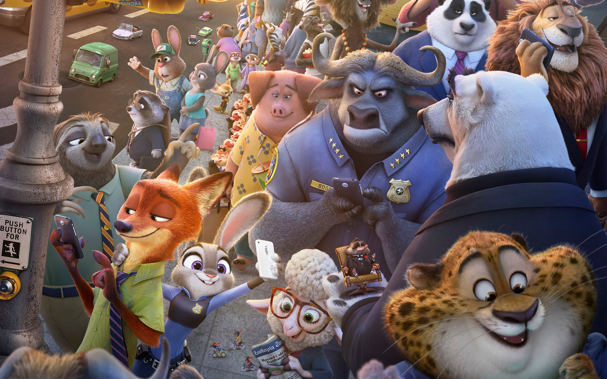
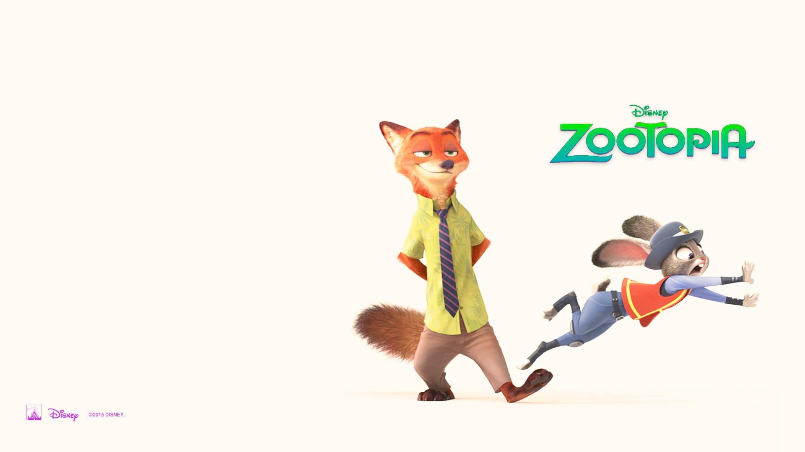

Zootopia
Zootropolis: Hayvanlar Şehri – Zootopia insanın var olmadığı bir dünyaya izleyicisini götüren bir animasyon filmi. Judy isimli bir tavşanın okul gösterisi edasıyla yaratmış olduğu küçük performans gösterisiyle film başlıyor. Bu gösteride küçük bir tavşanın avcı karşısında nasıl çaresiz olduğunu ve doğanın iç güdüsüyle beraber nasıl öldürüldüğünü görüyoruz ki bir anda sahne ışıkları yanıyor ve aslında bunun bir tiyatro performansı olduğunu görüyoruz. Tam bu ışıkların yanmasının paralelinde izleyiciye neyle karşı karşıya olduğu bir metin olarak veriliyor Judy ve tiyatro yapan arkadaşlarının ağzından. İlk sahneyi görmekle beraber filme yönlendireceğiniz ilk eleştiri muhakkak insanlık neden bu kadar kendini üstün görüyor olmalı. Eğer bu eleştiriyi filme ve kendinize yapmıyorsanız aslında sistemin çarklarından birine dönmüşsünüz ve belki de farkında değilsiniz demektir ve bu en tehlikeli olan durum olabilir. Neden ilk sahneyle beraber böyle bir eleştiri yapmak gerekiyor çünkü insanlık kendine ait olan sıfatları ve durumları doğaya ve hayvanlara ilk sahnede yüklüyor. Hayvanlar filmde aktarıldığı üzere ‘modernleşmiş’ ve ‘medeniyetleşmiş’ halde karşımıza çıkıyorlar. Bunun örnekleri olarak da kıyafet giyiyorlar, büyük kaotik kentlerde bir şekile beraber yaşıyorlar ve tüm teknolojik virüsler ile donatılmış bir şekilde hayatlarına devam ediyorlar. Tüm bu perspektiften baktığımızda hayvansal iç güdülerini bir kenara bırakmış olan hayvanlar sadece birer insan kopyası haline dönüştürülmüş oluyorlar. İnsanlığın iki ayak üzerinde durduğu andan itibaren doğaya egemen bir bakış atması ve bununla beraber tek tanrılı dinlerin insanların zihnini ele geçirmesiyle beraber doğayı ve hayvanları insanın önüne bir hediye ve kullanılmasında hiçbir sorunun olmadığı metalar olarak seriyor oluşu insanın egosunu yeniden tanımlamış ve insan bu yeniden tanımlanış içerisinde kendini en üstün ırk olarak görmüştür. Doğa katliamlarının ve ekolojik hasarların en büyük nedeni olan insan bu ego tatmini ve savaşı içerisinde sadece kendini düşünüyor olmuş; kendisi için en iyi olanın en iyi olduğunu ve kendisinin yarattığının en iyi olduğunu düşünerek kendini buna inandırmıştır. Bu inanışın bir başka uyanışını da Zootopia filminde görüyoruz. Zootopia insanın kendini ve kendi yarattıklarını mükemmel görmesi ve ‘kendisinin altında’ yer alan canlılara bunu empoze ederek doğayı başka bir söylem ile tekrar egemenliği altına almasını ve kendi insani sıfatlarıyla hayvanları ‘çocuksu’ bir şekilde zapt etmesini ele alıyor.

Byron Howard ve Rich Moore tarafından yönetmenliği yapılan animasyon filminde bir tavşan olan Judy ile tanışıyoruz. Judy’nin bize öğrettiklerinden öğrendiğimiz kadarıyla hayvanlar ‘medeni’ olarak bütün iç güdülerini bir kenara bırakmışlar bir zaman önce ve artık beraber yaşıyorlar. Birçok küçük kentin yanında bir de kozmopolit bir şehir olan Zootropolis şehrinde hayvanlar birlikte yaşamaya başlamışlardır. Ama bu yaşama baktığımızda suç olgusu, para arzusu, polis-devlet gibi insanın eril dünyasının güç dengeleri ve kurumsal kurumları ve modern insan dediğimiz canlının teknoloji gibi zaafları hayvan şehrinde hakimdir. Küçük Judy’nin tek hayali büyüyünce büyük şehre taşınmak ve orada bir polis olmaktır. Judy dünyayı değiştirmek istemektedir. Ancak ailesi de dahil olmak üzere çevresindeki kimse bir tavşanın polis olabileceğini düşünmez hatta hayal bile etmez. Bu yüzden de çevresindeki herkes tavşan Judy’den hayallerini bırakmasını ister. Bu noktada film biraz da olsa ‘büyük’ bir mesaj kaygısı yatıyor. Çocukların hatta yetişkinlerin de hayalleri ne olursa olsun onun peşinden gitmeleri söyleniyor. Bu hayalleri kovalamak ve içinde yaşadığınız toplumun kalıplarına uymak zorunda olmamak için azimli olmak ve belki de asi olmak gerektiğini söyleyen animasyon bir yerden duvarları yıkıyor evet(!) ama yine de ne olursa olsun hayvan karakterlere yüklediği insani olgular ve kimlikler filmi gözden ilk sahnede düşürüyor.
Judy hayallerinin peşinden koşup bir polis olduğunda, ilk tavşan polis olduğu için büyük bir ilgi topluyor ve aslan olan belediye başkanı tarafından büyük şehir Zootropolis’e gönderiliyor. Burada küçük kentten gelen Judy büyük şehire ve büyük şehirde yalnızlaşan insana – pardon hayvana – alışmaya çabalıyor. Bu alışma sürecinde hayata dair dersler veren animasyon filmi tam olarak nerede durması gerektiğini bilmiyor. Büyük bir melodrama kaçan sahnelerle beraber klişe bir son ile bitiyor film. Judy hiç aklına gelmeyecek karakterde bir özneyle – tilki Nick ile – arkadaşlık hatta partnerlik kuruyor ve bu ortaklık ışığında büyük bir davayı çözüyorlar ama aslında çözmemiş ve davanın arkasındaki büyük gizemi ve kötüyü görmemiş oluyorlar. Daha sonra kahramanlaştırılan ana karakterimiz tabii ki bir anda bütün olayı çözüyor ve hiçbir şey için geç kalmamış bir şekilde şehre dönüp olayı çözüyor. Animasyon sektörünün son örnekleri ve hatta ilk örneklerine baktığımızda gözümüzü yaşartan, kalbimizi genişletip bizi başka birer insana dönüştüren o kadar çok yapım arasında Zootropolis karşımıza sadece aynı klişeleri yoğuran bir yapım olarak karşımıza çıkıyor. Zaten hikayenin ilk kurulma aşamasında büyük bir tartışma alanı yaratmış olan film ilerleyen kurgusu ve olay örgüsüyle beraber hiçbir noktada tatmin etmiyor ve bu tatminsizlikle beraber izleyiciye bazı tartışma alanları yaratsa da pek söz hakkı olabilecek alanlarda dolaşmıyor.
 Interstellar
Interstellar Arrival
Arrival.svg)